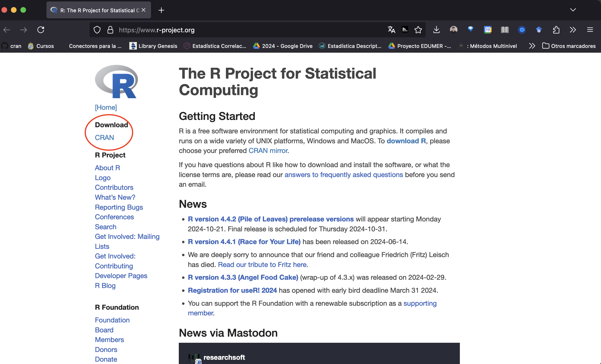
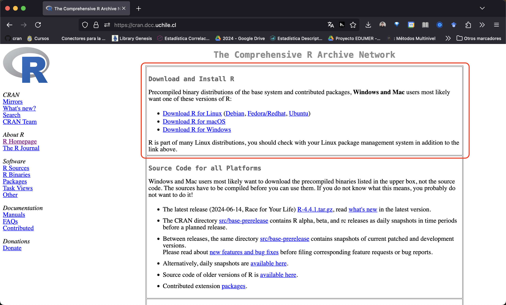
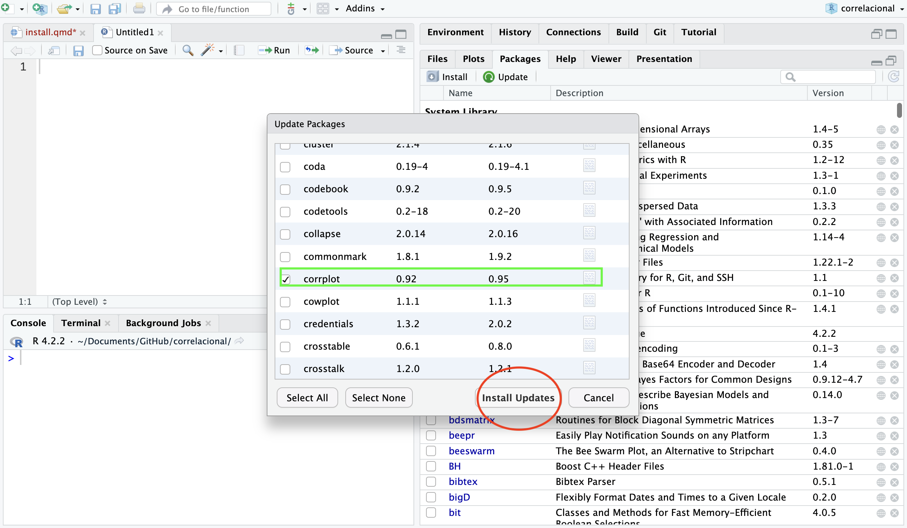

install.packages("pacman")R, librerías y versiones
1. Descripción
Trabajar con el software de programación R y el entorno de desarrollo integrado (IDE) RStudio requiere, la mayor parte del tiempo, estar al tanto de actualizaciones tanto de R como de las librerías que utilizamos para el procesamiento y análisis de datos.
R y sus librerías tienen distintas versiones. No estar al tanto de esto puede generar problemas cuando, por ejemplo, queremos correr algún código que encontramos en internet, no podemos ejecutar el código de un colega o cuando queremos utilizar librerías o herramientas nuevas que nos ofrece la comunidad de R.
Por tanto, cuando estemos desarrollando una evaluación práctica en RStudio es de suma importancia contar con una versión actualizada de R y de las librerías necesarias que se utilizan en las sesiones prácticas del curso.
En esta guía de recursos te dejaremos algunas buenas prácticas para conocer:
- Con qué versión de R y librerías estoy trabajando
- Cómo reportar las versiones que utilizo a otras personas
- Actualizar mi versión de R y librerías necesarias para este curso
2. Instalar pacman y utils
Lo primero que haremos es verificar que tenemos instaladas dos librerías importantes: pacman y utils. La librería utils ya viene por defecto en R, así que solo instalaremos manualmente pacman.
Con la función install.packages("") instalamos una determinada librería en nuestro computador. El nombre de la librería va dentro de las comillas ” “.
Nota
IMPORTANTE
Si ya tienes instaladas estas librerías entonces no es necesario volver a instalarlas con install.packages(""). Solo basta con llamarlas con library().
Ahora nuestras librerías solo están instaldas en nuestro computador, nos falta llamarlas para que el software reconozca que las usaremos en el futuro. Esto lo hacemos con la función library(), y dentro de los paréntesis () va el nombre de la librería determinada sin comillas.
library(pacman)
library(utils)3. Conocer mi versión de R y librerías
Con la función sessionInfo() del paquete utils podemos obtener un resumen tanto de la versión de R como de las librerías que tenemos instaladas en nuestro computador. Veamos cómo se hace:
utils::sessionInfo()R version 4.3.3 (2024-02-29)
Platform: x86_64-pc-linux-gnu (64-bit)
Running under: Ubuntu 24.04.1 LTS
Matrix products: default
BLAS: /usr/lib/x86_64-linux-gnu/blas/libblas.so.3.12.0
LAPACK: /usr/lib/x86_64-linux-gnu/lapack/liblapack.so.3.12.0
locale:
[1] LC_CTYPE=en_US.UTF-8 LC_NUMERIC=C
[3] LC_TIME=en_US.UTF-8 LC_COLLATE=en_US.UTF-8
[5] LC_MONETARY=en_US.UTF-8 LC_MESSAGES=en_US.UTF-8
[7] LC_PAPER=en_US.UTF-8 LC_NAME=C
[9] LC_ADDRESS=C LC_TELEPHONE=C
[11] LC_MEASUREMENT=en_US.UTF-8 LC_IDENTIFICATION=C
time zone: America/Santiago
tzcode source: system (glibc)
attached base packages:
[1] stats graphics grDevices utils datasets methods base
other attached packages:
[1] pacman_0.5.1 knitr_1.48
loaded via a namespace (and not attached):
[1] htmlwidgets_1.6.4 compiler_4.3.3 fastmap_1.2.0 cli_3.6.3
[5] tools_4.3.3 htmltools_0.5.8.1 yaml_2.3.10 rmarkdown_2.28
[9] jsonlite_1.8.9 xfun_0.48 digest_0.6.37 rlang_1.1.4
[13] evaluate_1.0.1 En este output de la consola vemos un listado de información muy completo, desde versión de R, sistema operativo, opciones de idioma local (LOCALE), y muchas librerías. Si optamos por esta versión de la información de la sesión, lo importante es fijarse en (a) versión de R, y (b) de las librerías cargadas al principio, que aquí aparecen bajo “other attached packages”.
4. Reportar mi versión de R y librerías
Para reportar la versión de R y librerías que tengo en mi computador a otras personas (como el profesor o colegas), basta con copiar el output que obtuvimos con sessionInfo() y enviarlo a quien corresponda.
5. Actualizar versión de R y librerías para este curso
Actualizar R
El método más eficiente es descargar una nueva versión de R desde sitio web de R > CRAN.

El CRAN que utilizamos es el de la Universidad de Chile. Debes descargar e instalar la versión de R correspondiente a tu sistema operativo. Luego, reinicia tu RStudio. La nueva versión de R se cargará automáticamente.


La nueva versión de R aparece justo después de instalar R y reiniciar RStudio.
Actualizar librerías
Luego de realizar el paso anterior, para installar y llamar a las librerías que utilizamos en el curso usaremos la función p_load() del paquete pacman. Lo genial de esta función es que instala y llama librerías en un solo movimiento, es decir:
- si incluyo una librería que no tengo instalada previamante,
p_load()la instala y llama - si incluyo una librería que ya tengo instala previamente,
p_load()la reconoce y sólo la llama
En este curso hemos utilizado diversas librerías y las fundamentales para la evaluación 2 son:
tidyversesjPlotsjmisckableExtrapsychcorrplotbroomcar
Algunos otros paquetes adicionales muy útiles son:
gginferenceggplot2haven
Veamos cómo instalar estas librerías claves para la evaluación 2 y desarrollo del curso.
pacman::p_load(tidyverse, # Manipulacion de datos
car, # Recodificar
sjPlot, # Tablas y graficos
sjmisc, # Descriptivos
kableExtra, # Tablas
psych, # Bivariados
corrplot, # Graficos correlacioj
broom) # VariosComprobemos si se instalaron las librerías y qué versiones con sessionInfo()
utils::sessionInfo()R version 4.3.3 (2024-02-29)
Platform: x86_64-pc-linux-gnu (64-bit)
Running under: Ubuntu 24.04.1 LTS
Matrix products: default
BLAS: /usr/lib/x86_64-linux-gnu/blas/libblas.so.3.12.0
LAPACK: /usr/lib/x86_64-linux-gnu/lapack/liblapack.so.3.12.0
locale:
[1] LC_CTYPE=en_US.UTF-8 LC_NUMERIC=C
[3] LC_TIME=en_US.UTF-8 LC_COLLATE=en_US.UTF-8
[5] LC_MONETARY=en_US.UTF-8 LC_MESSAGES=en_US.UTF-8
[7] LC_PAPER=en_US.UTF-8 LC_NAME=C
[9] LC_ADDRESS=C LC_TELEPHONE=C
[11] LC_MEASUREMENT=en_US.UTF-8 LC_IDENTIFICATION=C
time zone: America/Santiago
tzcode source: system (glibc)
attached base packages:
[1] stats graphics grDevices utils datasets methods base
other attached packages:
[1] broom_1.0.7 corrplot_0.94 psych_2.4.6.26 kableExtra_1.4.0
[5] sjmisc_2.8.10 sjPlot_2.8.16 car_3.1-3 carData_3.0-5
[9] lubridate_1.9.3 forcats_1.0.0 stringr_1.5.1 dplyr_1.1.4
[13] purrr_1.0.2 readr_2.1.5 tidyr_1.3.1 tibble_3.2.1
[17] ggplot2_3.5.1 tidyverse_2.0.0 pacman_0.5.1 knitr_1.48
loaded via a namespace (and not attached):
[1] gtable_0.3.5 xfun_0.48 htmlwidgets_1.6.4 insight_0.20.5
[5] lattice_0.22-6 tzdb_0.4.0 vctrs_0.6.5 tools_4.3.3
[9] sjstats_0.19.0 generics_0.1.3 datawizard_0.13.0 parallel_4.3.3
[13] fansi_1.0.6 pkgconfig_2.0.3 ggeffects_1.7.2 lifecycle_1.0.4
[17] compiler_4.3.3 munsell_0.5.1 mnormt_2.1.1 htmltools_0.5.8.1
[21] yaml_2.3.10 Formula_1.2-5 pillar_1.9.0 abind_1.4-8
[25] nlme_3.1-166 tidyselect_1.2.1 sjlabelled_1.2.0 digest_0.6.37
[29] performance_0.12.3 stringi_1.8.4 fastmap_1.2.0 grid_4.3.3
[33] colorspace_2.1-1 cli_3.6.3 magrittr_2.0.3 utf8_1.2.4
[37] withr_3.0.1 backports_1.5.0 scales_1.3.0 timechange_0.3.0
[41] rmarkdown_2.28 hms_1.1.3 evaluate_1.0.1 viridisLite_0.4.2
[45] rlang_1.1.4 glue_1.8.0 xml2_1.3.6 svglite_2.1.3
[49] rstudioapi_0.16.0 jsonlite_1.8.9 R6_2.5.1 systemfonts_1.1.0 Opción vía Rstudio
Si queremos actualizar una librería en R, lo que podemos hacer es dirigirnos al panel inferior derecho y dar click en la pestaña de “Packages”. Allí, les aparecerá un listado de las librerías que tienen en su computador, una descripción y su versión.

Para actualizar una librería, podemos seleccionarla y darle click al botón de “Update” y luego “Install Update” a la librería correspondiente. Veamos un ejemplo

Opción vía código
Bien, pero ¿hay otra alternativa? Sí, como todo en R. Una forma sencilla de actualizar una librería o varias es con la función install.packages pero identificando argumentos adicionales. La estructura del código es así: install.packages("package_name", dependencies = TRUE, update = TRUE). Supongamos que queremos actualizar a la versión más de nueva de corrplot:
install.packages("corrplot", dependencies = TRUE, update = TRUE)Con esto, actualizamos manualmente vía código una librería. Para verificarlo podemos, nuevamente, usar sessionInfo() o de las otras maneras que hemos aprendido.
Recursos adicionales
Para más informaciones, sobre R y Rstudio, revisar link de práctico de estadística descriptiva –> link